1DeepSeek-AI，2清华大学，3北京大学
{zhihongshao,wangpeiyi,zhuqh,guoday}@deepseek.com
https://github.com/deepseek-ai/DeepSeek-Math
数学推理具有复杂且结构化的特征，因此给语言模型带来了重大挑战。本文介绍 DeepSeekMath 7B：该模型以 DeepSeek-Coder-Base-v1.5 7B 为起点，使用来自 Common Crawl 的 120B 个数学相关 token，以及自然语言和代码数据进行继续预训练。DeepSeekMath 7B 无需依赖外部工具包和投票技术，便在竞赛级 MATH 基准上取得了 51.7% 的出色成绩，接近 Gemini-Ultra 和 GPT-4 的表现水平。对 DeepSeekMath 7B 的 64 个采样结果使用自一致性方法后，MATH 成绩达到 60.9%。DeepSeekMath 的数学推理能力归因于两个关键因素：首先，我们通过精心设计的数据筛选流水线，挖掘了公开网络数据的巨大潜力。其次，我们提出 Group Relative Policy Optimization（GRPO），这是 Proximal Policy Optimization（PPO）的一种变体，能够增强数学推理能力，同时优化 PPO 的内存使用。
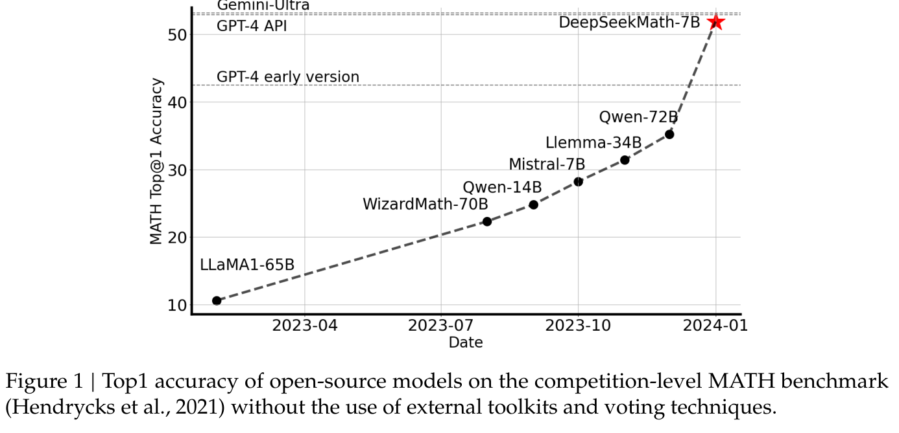
* 核心贡献者。
† 工作在 DeepSeek-AI 实习期间完成。
LLM 彻底改变了人工智能中的数学推理方式，推动了定量推理基准（Hendrycks et al., 2021）和几何推理基准（Trinh et al., 2024）的重大进展。此外，这些模型也已成为帮助人类解决复杂数学问题的重要工具（Tao, 2023）。然而，GPT-4（OpenAI, 2023）和 Gemini-Ultra（Anil et al., 2023）等尖端模型并未公开提供，而目前可获得的开源模型在性能上仍明显落后。
本研究介绍 DeepSeekMath，这是一个领域专用语言模型，其数学能力显著超过开源模型，并在学术基准上接近 GPT-4 的表现水平。为实现这一目标，我们构建了 DeepSeekMath Corpus：一个包含 120B 个数学 token 的大规模高质量预训练语料库。该数据集使用基于 fastText 的分类器（Joulin et al., 2016）从 Common Crawl（CC）中提取。在初始迭代中，分类器以 OpenWebMath（Paster et al., 2023）中的样本作为正例，并选择多种其他网页作为负例进行训练。随后，我们利用该分类器从 CC 中挖掘更多正例，并通过人工标注进一步优化这些样本。分类器之后使用这一增强数据集进行更新，以提高性能。评估结果表明，这一大规模语料库具有较高质量：我们的基础模型 DeepSeekMath-Base 7B 在 GSM8K（Cobbe et al., 2021）上达到 64.2%，在竞赛级 MATH 数据集（Hendrycks et al., 2021）上达到 36.2%，超过 Minerva 540B（Lewkowycz et al., 2022a）。此外，DeepSeekMath Corpus 包含多种语言，因此我们也观察到中文数学基准上的提升（Wei et al., 2023; Zhong et al., 2023）。我们认为，我们在数学数据处理方面的经验可以成为研究社区的一个起点，未来仍有很大的改进空间。
DeepSeekMath-Base 由 DeepSeek-Coder-Base-v1.5 7B（Guo et al., 2024）初始化，因为我们注意到，与通用 LLM 相比，从经过代码训练的模型出发是更好的选择。我们还观察到，数学训练也提高了模型在 MMLU（Hendrycks et al., 2020）和 BBH（Suzgun et al., 2022）基准上的能力，表明它不仅增强了模型的数学能力，也提升了一般推理能力。
预训练后，我们使用 CoT（chain-of-thought）（Wei et al., 2022）、PoT（program-of-thought）（Chen et al., 2022; Gao et al., 2023）和 tool-integrated reasoning（Gou et al., 2023）数据，对 DeepSeekMath-Base 进行数学指令微调。得到的 DeepSeekMath-Instruct 7B 超过所有同等规模的 7B 模型，并可与 70B 开源指令微调模型相媲美。
此外，我们提出 Group Relative Policy Optimization（GRPO），它是 Proximal Policy Optimization（PPO）（Schulman et al., 2017）的一个强化学习（RL）算法变体。GRPO 不使用 critic 模型，而是根据组内分数估计基线，显著降低了训练资源需求。仅使用英文指令微调数据的一个子集，GRPO 就在强大的 DeepSeekMath-Instruct 基础上取得了显著提升；强化学习阶段的提升既包括域内任务（GSM8K：82.9% → 88.2%，MATH：46.8% → 51.7%），也包括域外数学任务（例如 CMATH：84.6% → 88.8%）。我们还提供了一个统一范式，用来理解拒绝采样微调（Rejection Sampling Fine-Tuning，RFT）（Yuan et al., 2023a）、DPO（Direct Preference Optimization）（Rafailov et al., 2023）、PPO 和 GRPO 等不同方法。基于这一统一范式，我们发现所有这些方法都可以被理解为直接或简化的强化学习技术。我们还进行了大量实验，例如在线与离线训练、结果监督与过程监督、单轮与迭代强化学习等，
（本段接原文第 3 页。）
（接原文第 2 页。）
以深入研究这一范式的关键要素。最后，我们解释了为什么我们的强化学习能提升指令微调模型的性能，并进一步依据这一统一范式总结了实现更有效强化学习的潜在方向。
我们的贡献包括可扩展的数学预训练，以及对强化学习的探索与分析。
（本条接原文第 4 页。）
（接原文第 3 页“英文与中文数学推理”。）
从小学水平到大学水平不等。英文基准包括 GSM8K（Cobbe et al., 2021）、MATH（Hendrycks et al., 2021）、SAT（Azerbayev et al., 2023）、OCW Courses（Lewkowycz et al., 2022a）和 MMLU-STEM（Hendrycks et al., 2020）。中文基准包括 MGSM-zh（Shi et al., 2023）、CMATH（Wei et al., 2023）、Gaokao-MathCloze（Zhong et al., 2023）和 Gaokao-MathQA（Zhong et al., 2023）。我们评估模型无需工具、生成自包含文本解答的能力，以及使用 Python 解决问题的能力。
在英文基准上，DeepSeekMath-Base 可与闭源 Minerva 540B（Lewkowycz et al., 2022a）相竞争，并超过所有开源基础模型，例如 Mistral 7B（Jiang et al., 2023）和 Llemma-34B（Azerbayev et al., 2023），无论这些模型是否经过数学预训练，且通常具有明显优势。值得关注的是，DeepSeekMath-Base 在中文基准上表现更好，这可能是因为我们没有像先前工作（Azerbayev et al., 2023; Lewkowycz et al., 2022a）那样只收集英文数学预训练数据，而是也纳入了高质量的非英文数据。经过数学指令微调和强化学习，得到的 DeepSeekMath-Instruct 和 DeepSeekMath-RL 展示了强大的性能，使开源社区首次在竞赛级 MATH 数据集上取得超过 50% 的准确率。
本节概述从 Common Crawl 构建 DeepSeekMath Corpus 的过程。如图 2 所示，我们提出了一条迭代流水线，展示如何从种子语料库出发，例如规模较小但质量较高的数学相关数据集，系统地从 Common Crawl 收集大规模数学语料。这种方法也适用于代码等其他领域。
首先，我们选择 OpenWebMath（Paster et al., 2023）这一高质量数学网页文本集合，作为初始种子语料库。利用该语料库，我们训练 fastText 模型（Joulin et al., 2016），以召回更多类似 OpenWebMath 的数学网页。具体而言，我们从种子语料库中随机选择 500,000 个数据点作为正训练样本，并从 Common Crawl 中随机选择另外 500,000 个网页作为负样本。我们使用一个开源库1进行训练，将向量维度设为 256，学习率设为 0.1，词 n-gram 的最大长度
（参数说明接原文第 5 页。）
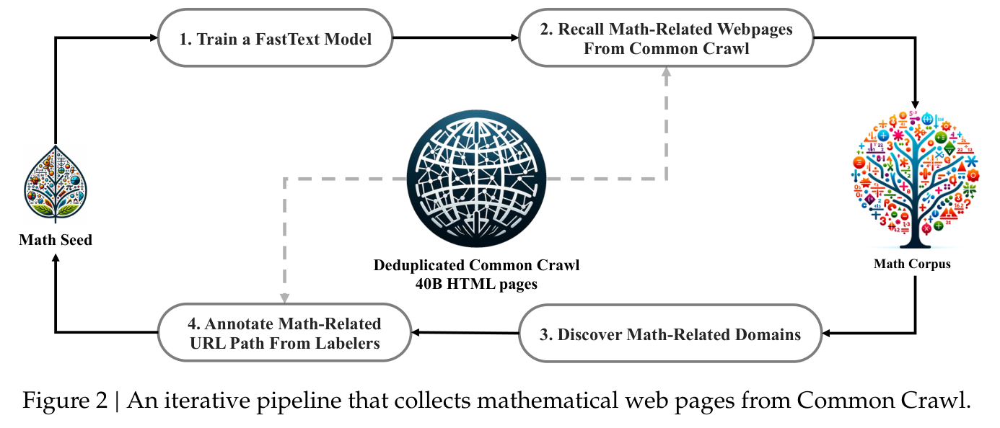
（接原文第 4 页训练参数。）
设为 3，词出现次数的最小值设为 3，训练 epoch 数设为 3。为了缩减原始 Common Crawl 的规模，我们采用基于 URL 的去重和近似去重技术，最终得到 40B 个 HTML 网页。之后，我们使用 fastText 模型从去重后的 Common Crawl 中召回数学网页。为过滤低质量数学内容，我们依据 fastText 模型预测的分数对收集到的网页排序，并仅保留排名靠前的网页。通过对排名前 40B、80B、120B 和 160B 个 token 进行预训练实验，评估应该保留的数据量。在第一次迭代中，我们选择保留排名前 40B 个 token。
第一轮数据收集之后，仍有大量数学网页未被收集，主要原因是 fastText 模型训练所用的正例不够多样。因此，我们识别更多数学网页来源，丰富种子语料库，以优化 fastText 模型。具体而言，我们首先将整个 Common Crawl 划分成互不重叠的域；一个域被定义为共享同一基础 URL 的网页集合。对于每个域，我们计算其网页在第一次迭代中被收集的比例。超过 10% 网页被收集的域会被归类为数学相关域，例如 mathoverflow.net。随后，我们在这些已识别的域中，人工标注与数学内容相关的 URL，例如 mathoverflow.net/questions。与这些 URL 关联、但尚未收集的网页将被加入种子语料库。这种方法使我们能够收集更多正例，训练出改进后的 fastText 模型，从而在下一轮迭代中召回更多数学数据。经过四轮数据收集，我们最终获得 35.5M 个数学网页，总计 120B 个 token。在第四轮迭代中，我们发现近 98% 的数据已在第三轮中收集，因此决定停止数据收集。
为了避免基准污染，我们遵循 Guo et al.（2024）的方法，过滤掉包含英文数学基准 GSM8K（Cobbe et al., 2021）和 MATH（Hendrycks et al., 2021），以及中文基准 CMATH（Wei et al., 2023）和 AGIEval（Zhong et al., 2023）中的问题或答案的网页。过滤标准如下：若任意文本片段中包含一个与评估基准中任意子串完全匹配的 10-gram 字符串，就将该片段从数学训练语料库中移除。对于长度不足 10 gram、但至少包含 3 gram 的基准文本，我们采用完全匹配来过滤受到污染的网页。
我们进行预训练实验，研究 DeepSeekMath Corpus 与近期发布的数学训练语料库相比如何：
我们对一个拥有 1.3B 参数的通用预训练语言模型进行数学训练；它与 DeepSeek LLM（DeepSeek-AI, 2024）采用相同框架，记为 DeepSeek-LLM 1.3B。我们在每个数学语料库上分别训练一个模型，训练量为 150B 个 token。所有实验都使用高效且轻量的 HAI-LLM（High-flyer, 2023）训练框架。遵循 DeepSeek LLM 的训练实践，我们使用 AdamW 优化器（Loshchilov and Hutter, 2017），其中 \(\beta _{1} = 0.9\)、\(\beta _{2} = 0.95\)、weight_decay = 0.1，并采用多阶段学习率调度：学习率在 2,000 个 warmup 步骤后达到峰值，在完成 80% 的训练过程后下降至峰值的 31.6%，在完成 90% 的训练过程后进一步下降至峰值的 10.0%。最大学习率设为 5.3e-4，batch size 为 4M 个 token，上下文长度为 4K。
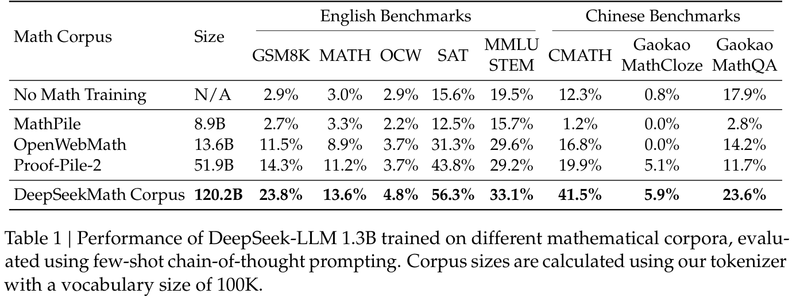
DeepSeekMath Corpus 具有高质量、覆盖多语言数学内容，并且规模最大。
（本条接原文第 7 页。）
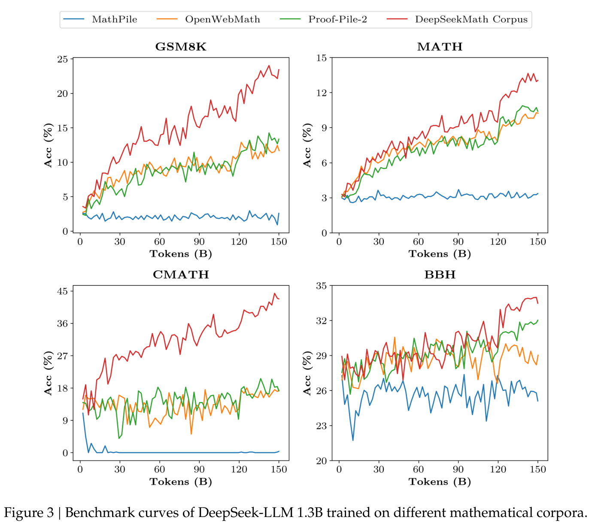
（接原文第 6 页“高质量”。）
在 50B 个 token 时的 Proof-Pile-2 模型，即相当于完整训练 Proof-Pile-2 的 1 个 epoch。这表明 DeepSeekMath Corpus 的平均质量更高。
本节介绍 DeepSeekMath-Base 7B，这是一个具有强大推理能力，尤其是数学能力的基础模型。我们的模型由 DeepSeek-Coder-Base-v1.5 7B 初始化，
（本段接原文第 8 页。）
（接原文第 7 页。）
（Guo et al., 2024），训练量为 500B 个 token。数据分布如下：56% 来自 DeepSeekMath Corpus，4% 来自 AlgebraicStack，10% 来自 arXiv，20% 为 Github 代码，剩余 10% 为 Common Crawl 中的英文和中文自然语言数据。我们主要采用第 2.2.1 节的训练设置，但将最大学习率设为 4.2e-4，batch size 设为 10M 个 token。
我们全面评估 DeepSeekMath-Base 7B 的数学能力，重点考察其不依赖外部工具、生成自包含数学解答的能力，使用工具解决数学问题的能力，以及形式化定理证明能力。除数学之外，我们也对基础模型进行更一般的能力刻画，包括自然语言理解、推理和编程技能。
通过逐步推理解决数学问题。我们使用少样本 CoT 提示（Wei et al., 2022），在八个英文和中文基准上评估 DeepSeekMath-Base 解决数学问题的性能。这些基准包含定量推理，例如 GSM8K（Cobbe et al., 2021）、MATH（Hendrycks et al., 2021）和 CMATH（Wei et al., 2023），以及选择题，例如 MMLU-STEM（Hendrycks et al., 2020）和 Gaokao-MathQA（Zhong et al., 2023），涵盖从小学到大学复杂程度的多个数学领域。
如表 2 所示，在全部八个基准上，DeepSeekMath-Base 7B 的表现均领先于开源基础模型，包括广泛使用的通用模型 Mistral 7B（Jiang et al., 2023），以及近期发布、在 Proof-Pile-2（Azerbayev et al., 2023）上经过数学训练的 Llemma 34B（Azerbayev et al., 2023）。尤其在竞赛级 MATH 数据集上，DeepSeekMath-Base 相较现有开源基础模型取得超过 10 个百分点的绝对提升，并超过 Minerva 540B（Lewkowycz et al., 2022a）；后者是参数规模为其 77 倍的闭源基础模型，以 PaLM（Lewkowycz et al., 2022b）为基础，并进一步在数学文本上训练。
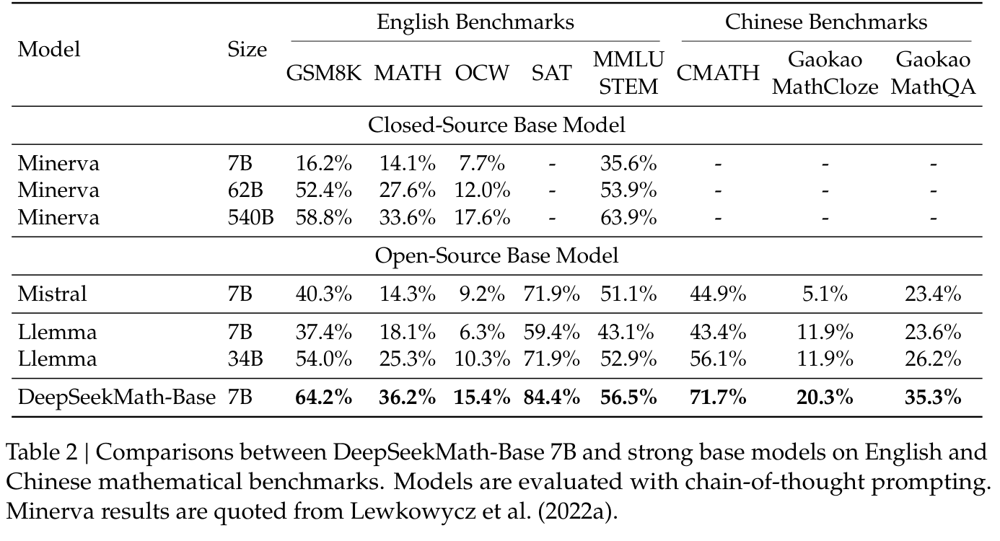
使用工具解决数学问题。我们使用少样本 PoT 提示（Chen et al., 2022; Gao et al., 2023），在 GSM8K 和 MATH 上评估程序辅助数学推理。模型被提示通过编写 Python 程序来解决每道题，并可使用 math、sympy 等库进行复杂计算。程序的执行结果作为答案进行评估。如表 3 所示，DeepSeekMath-Base 7B 超过了此前最先进的 Llemma 34B。
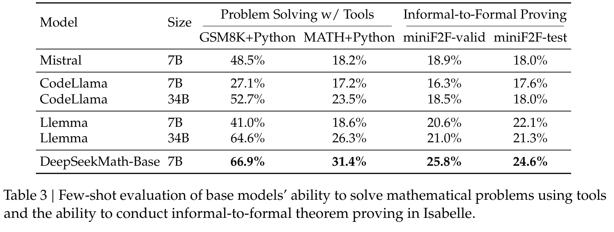
形式化数学。形式化证明自动化有助于确保数学证明的准确性和可靠性，并提高效率，近年来受到越来越多的关注。我们在 Jiang et al.（2022）的非形式化到形式化证明任务上评估 DeepSeekMath-Base 7B；该任务根据非形式化陈述、该陈述的形式化版本以及非形式化证明，生成形式化证明。我们在 miniF2F（Zheng et al., 2021）上进行评估，该基准用于形式化奥林匹克竞赛级数学，并使用少样本提示为每个问题生成 Isabelle 形式化证明。遵循 Jiang et al.（2022），我们利用模型生成证明草图，并执行现成的自动证明器 Sledgehammer（Paulson, 2010）来填补缺失的细节。如表 3 所示，DeepSeekMath-Base 7B 在证明自动形式化方面表现强劲。
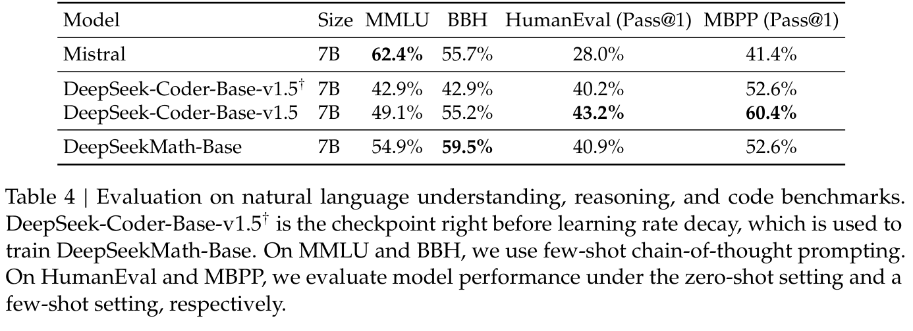
自然语言理解、推理与代码。我们在 MMLU（Hendrycks et al., 2020）上评估模型的自然语言理解表现，在 BBH（Suzgun et al., 2022）上评估推理能力，在 HumanEval（Chen et al., 2021）和 MBPP（Austin et al.,
（本段接原文第 10 页。）
（接原文第 9 页。）
2021）上评估编程能力。如表 4 所示，相较其前身 DeepSeek-Coder-Base-v1.5（Guo et al., 2024），DeepSeekMath-Base 7B 在 MMLU 和 BBH 上的性能显著提升，体现了数学训练对语言理解和推理的积极影响。此外，通过加入代码 token 进行持续训练，DeepSeekMath-Base 7B 有效保持了 DeepSeek-Coder-Base-v1.5 在两个编程基准上的表现。总体而言，DeepSeekMath-Base 7B 在三个推理与编程基准上显著超过通用模型 Mistral 7B（Jiang et al., 2023）。
我们构建了一个数学指令微调数据集，覆盖不同数学领域、不同复杂程度的英文和中文问题：问题配有 CoT（Wei et al., 2022）、PoT（Chen et al., 2022; Gao et al., 2023）和 tool-integrated reasoning 格式（Gou et al., 2023）的解答。训练样本总数为 776K。
本节介绍 DeepSeekMath-Instruct 7B，它是在 DeepSeekMath-Base 基础上进行数学指令微调得到的。训练样本被随机拼接，直到达到 4K 个 token 的最大上下文长度。我们使用 256 的 batch size 和恒定的 5e-5 学习率训练模型 500 步。
我们在 4 个英文和中文定量推理基准上，分别评估模型不使用工具与使用工具时的数学表现。我们将模型与当时的领先模型进行比较：
（模型列表接原文第 11 页。）
2 https://openai.com/blog/chatgpt-plugins#code-interpreter
3 https://x.ai/model-card
4 https://www.baichuan-ai.com
5 https://open.bigmodel.cn/dev/api#glm-4
（接原文第 10 页开源模型列表。）
ChatGLM3 6B（ChatGLM3 Team, 2023），以及数学能力增强模型，包括（5）InternLM2-Math 20B6，它以 InternLM2 为基础，经过数学训练后再进行指令微调；（6）Math-Shepherd-Mistral 7B，它使用过程监督 RM，对 Mistral 7B（Jiang et al., 2023）进行 PPO 训练（Schulman et al., 2017）；（7）WizardMath 系列（Luo et al., 2023），它利用 evolve-instruct，即使用 AI 演化指令的一种指令微调方式，以及 PPO 训练，提升 Mistral 7B 和 Llama-2 70B（Touvron et al., 2023）的数学推理能力，训练问题主要来自 GSM8K 和 MATH；（8）MetaMath 70B（Yu et al., 2023），它是在增强版 GSM8K 和 MATH 上微调的 Llama-2 70B；（9）ToRA 34B（Gou et al., 2023），它是通过微调进行工具融合数学推理的 CodeLlama 34B；（10）MAmmoTH 70B（Yue et al., 2023），它是在 MathInstruct 上进行指令微调的 Llama-2 70B。
如表 5 所示，在禁止使用工具的评估设置下，DeepSeekMath-Instruct 7B 展示了强大的逐步推理表现。尤其在竞赛级 MATH 数据集上，我们的模型比所有开源模型以及大多数专有模型，例如 Inflection-2 和 Gemini Pro，至少高出 9 个百分点。即使对于规模大得多的模型，例如 Qwen 72B，或专门通过面向数学的强化学习增强的模型，例如 WizardMath-v1.1 7B，这一结论也成立。尽管 DeepSeekMath-Instruct 在 MATH 上可与中国的专有模型 GLM-4 和 Baichuan-3 相媲美，它仍落后于 GPT-4 和 Gemini Ultra。
在允许模型将自然语言推理与基于程序的工具使用相结合来解题的评估设置下，DeepSeekMath-Instruct 7B 在 MATH 上的准确率接近 60%，超过所有现有开源模型。在其他基准上，我们的模型可与此前最先进、规模为其 10 倍的 DeepSeek-LLM-Chat 67B 相竞争。
强化学习（RL）已被证明可以在 SFT 阶段之后进一步提高 LLM 的数学推理能力（Luo et al., 2023; Wang et al., 2023b）。本节介绍我们高效且有效的强化学习算法 Group Relative Policy Optimization（GRPO）。
Proximal Policy Optimization（PPO）（Schulman et al., 2017）是一种 actor-critic 强化学习算法，广泛用于 LLM 的强化学习微调阶段（Ouyang et al., 2022）。具体而言，它通过最大化以下替代目标来优化 LLM：
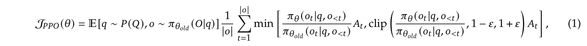
其中 \(\pi _{\theta}\) 和 \(\pi _{\theta old}\) 分别是当前策略模型和旧策略模型，\(q\) 和 \(o\) 分别是从问题数据集和旧策略 \(\pi _{\theta old}\) 中采样的问题与输出。\(\epsilon\) 是 PPO 引入的一个与裁剪相关的超参数，用于稳定训练。\(A_{t}\) 是优势值，采用广义优势估计（Generalized Advantage Estimation，GAE）（Schulman et al., 2015）计算，其依据
（本段接原文第 13 页；第 12 页为表 5。）
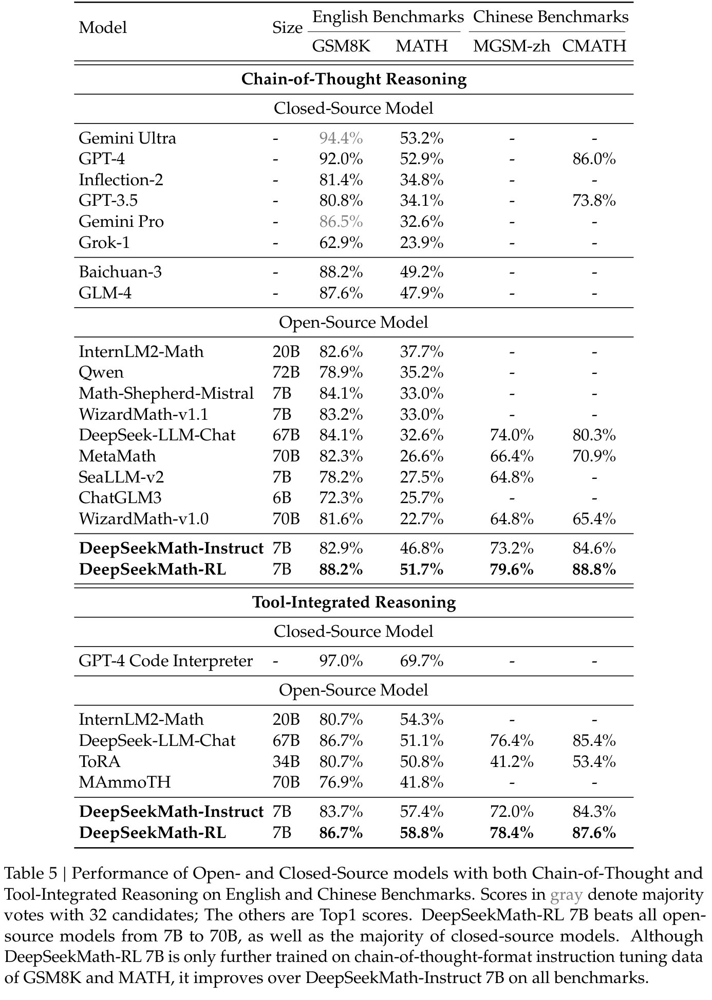
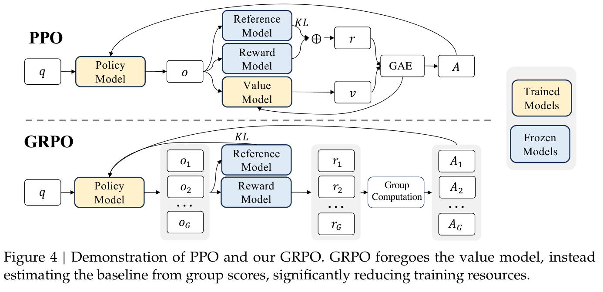
（接原文第 11 页优势值计算说明。）
是奖励 \(\{r_{\ge t}\}\) 和学习得到的价值函数 \(V_{\psi}\)。因此，在 PPO 中，需要在训练策略模型的同时训练一个价值函数。为了减轻对 RM 的过度优化，标准做法是在每个 token 的奖励中加入来自参考模型的逐 token KL 惩罚（Ouyang et al., 2022），即：
其中 \(r_{\phi}\) 是 RM，\(\pi _{ref}\) 是参考模型，通常为初始 SFT 模型，\(\beta\) 是 KL 惩罚的系数。
PPO 使用的价值函数通常由另一个与策略模型规模相当的模型表示，因此带来了较大的内存和计算负担。此外，在强化学习训练中，价值函数作为计算优势值的基线，用于降低方差。然而，在 LLM 场景中，RM 通常仅为最后一个 token 赋予奖励分数，这可能使训练一个在每个 token 上都准确的价值函数变得困难。为解决这一问题，如图 4 所示，我们提出 Group Relative Policy Optimization（GRPO）；它无需像 PPO 那样额外近似价值函数，而是将针对同一问题采样得到的多个输出的平均奖励用作基线。具体而言，对于每个问题 \(q\)，GRPO 从旧策略 \(\pi _{\theta old}\) 中采样一组输出 \(\{o_{1}, o_{2}, \cdot \cdot \cdot , o_{G}\}\)，之后通过最大化以下目标来优化策略模型：
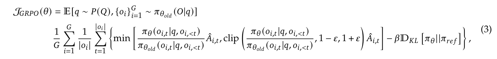
其中 \(\epsilon\) 和 \(\beta\) 为超参数，\(\hat{A}_{i,t}\) 是仅依据每组内部输出的相对奖励计算的优势值，后续小节将详细介绍。GRPO 采用的组相对优势计算方式，与 RM 的比较性质十分契合，因为 RM 通常在对同一个问题的不同输出进行比较的数据集上训练。还应注意，GRPO 并不把 KL 惩罚加入奖励，而是通过在损失中直接加入训练策略与参考策略之间的 KL 散度进行正则化，以免使 \(\hat{A}_{i,t}\) 的计算复杂化。
输入：初始策略模型 πθinit；奖励模型 rφ；任务提示 D；超参数 ε、β、μ
1: 策略模型 πθ ← πθinit
2: 对 iteration = 1, ..., I：
3: 参考模型 πref ← πθ
4: 对 step = 1, ..., M：
5: 从 D 中采样一个 batch Db
6: 更新旧策略模型 πθold ← πθ
7: 对 Db 中的每个问题 q，采样 G 个输出 {oi}ᵢ₌₁ᴳ ∼ πθold(· | q)
8: 运行 rφ，为每个采样输出 oi 计算奖励 {ri}ᵢ₌₁ᴳ
9: 通过组相对优势估计，计算 oi 中第 t 个 token 的 Âi,t
10: 对 GRPO iteration = 1, ..., μ：
11: 通过最大化 GRPO 目标（公式 21）更新策略模型 πθ
12: 使用回放机制进行持续训练，更新 rφ
输出：πθ
译注：算法第 11 行的“公式 21”按原文保留；正文中的完整 GRPO 优化目标见公式（3）。
与公式（2）使用的 KL 惩罚项不同，我们使用以下无偏估计器来估计 KL 散度（Schulman, 2020）：
它保证取正值。
形式上，对于每个问题 \(q\)，从旧策略模型 \(\pi _{\theta old}\) 中采样一组输出 \(\{o_{1}, o_{2}, \cdot \cdot \cdot , o_{G}\}\)。随后使用 RM 为这些输出打分，对应得到 \(G\) 个奖励 \(r = \{r_{1}, r_{2}, \cdot \cdot \cdot , r_{G}\}\)。接着，通过减去组内平均值并除以组内标准差，将这些奖励归一化。结果监督在每个输出 \(o_{i}\) 的末尾提供归一化奖励，并将该输出中所有 token 的优势值 \(\hat{A}_{i,t}\) 设为这一归一化奖励，即 \(\hat{A}_{i,t} = \tilde{r}_{i} = (r_{i} - \operatorname{mean}(r)) / \operatorname{std}(r)\)，之后通过最大化公式（3）定义的目标来优化策略。
结果监督仅在每个输出的末尾提供奖励，这可能不足以对复杂数学任务中的策略进行充分且高效的监督。遵循 Wang et al.（2023b），我们也探索过程监督，它在每个推理步骤的末尾提供奖励。形式上，给定问题 \(q\) 和 \(G\) 个采样输出 \(\{o_{1}, o_{2}, \cdot \cdot \cdot , o_{G}\}\)，我们使用 PRM 为输出的每一步打分，得到对应奖励：
\(R = \{\{r_1^{\operatorname{index}(1)},\ldots,r_1^{\operatorname{index}(K_1)}\},\ldots,\{r_G^{\operatorname{index}(1)},\ldots,r_G^{\operatorname{index}(K_G)}\}\}\)，其中 index(\(j\)) 是第 \(j\) 个步骤的末尾 token 索引，\(K_{i}\) 是第 \(i\) 个输出的步骤总数。我们同样使用平均值和标准差将这些奖励归一化，即 \(\tilde{r}_{i}^{\operatorname{index}(j)} = (r_{i}^{\operatorname{index}(j)} - \operatorname{mean}(R)) / \operatorname{std}(R)\)。随后，过程监督将每个 token 的优势值计算为其后各步骤归一化奖励的总和，即 \(\hat{A}_{i,t} = \sum _{\operatorname{index}(j)\ge t} \tilde{r}_{i}^{\operatorname{index}(j)}\)，之后通过最大化公式（3）定义的目标来优化策略。
随着强化学习训练过程推进，旧 RM 可能不足以监督当前策略模型。因此，我们也探索使用 GRPO 的迭代强化学习。如算法 1 所示，在迭代 GRPO 中，我们根据策略模型的采样结果，为 RM 生成新的训练集，并使用包含 10% 历史数据的回放机制，持续训练旧 RM。之后，我们将参考模型设为当前策略模型，并使用新 RM 持续训练策略模型。
我们基于 DeepSeekMath-Instruct 7B 进行强化学习。强化学习训练数据来自 SFT 数据中与 GSM8K 和 MATH 相关、采用 CoT 格式的问题，共包含约 144K 个问题。我们排除其他 SFT 问题，以研究强化学习对整个 RL 阶段都缺少相应数据的基准的影响。我们遵循 Wang et al.（2023b）构建 RM 训练集。初始 RM 基于 DeepSeekMath-Base 7B 训练，学习率为 2e-5。对于 GRPO，我们将策略模型学习率设为 1e-6。KL 系数为 0.04。针对每个问题，我们采样 64 个输出。最大长度设为 1024，训练 batch size 为 1024。每个探索阶段之后，策略模型仅进行一次更新。我们按照 DeepSeekMath-Instruct 7B 的评估方式，在各个基准上评估 DeepSeekMath-RL 7B。对于 DeepSeekMath-RL 7B，使用 CoT 推理的 GSM8K 和 MATH 可视为域内任务，其他所有基准可视为域外任务。
表 5 展示了开源与闭源模型在英文和中文基准上，采用 CoT 及 tool-integrated reasoning 时的表现。我们发现：（1）DeepSeekMath-RL 7B 使用 CoT 推理时，在 GSM8K 和 MATH 上分别达到 88.2% 和 51.7% 的准确率。这一性能超过了从 7B 到 70B 的所有开源模型，以及大多数闭源模型。（2）关键的是，DeepSeekMath-RL 7B 以 DeepSeekMath-Instruct 7B 为起点，仅在 GSM8K 和 MATH 的 CoT 格式指令微调数据上训练。尽管训练数据的范围有限，它仍在所有评估指标上超过 DeepSeekMath-Instruct 7B，展示了强化学习的有效性。
本节分享我们在预训练和强化学习实验中的发现。
首先，我们分享预训练经验。除非另有说明，我们遵循第 2.2.1 节所述的训练设置。需要注意，本节提到 DeepSeekMath Corpus 时，使用的是数据收集过程第二轮迭代得到的 89B-token 数据集。
一种流行但未经验证的假设认为，代码训练可以改善推理能力。我们尝试对此提供部分回答，尤其在数学领域：代码训练
（本段接原文第 16 页。）
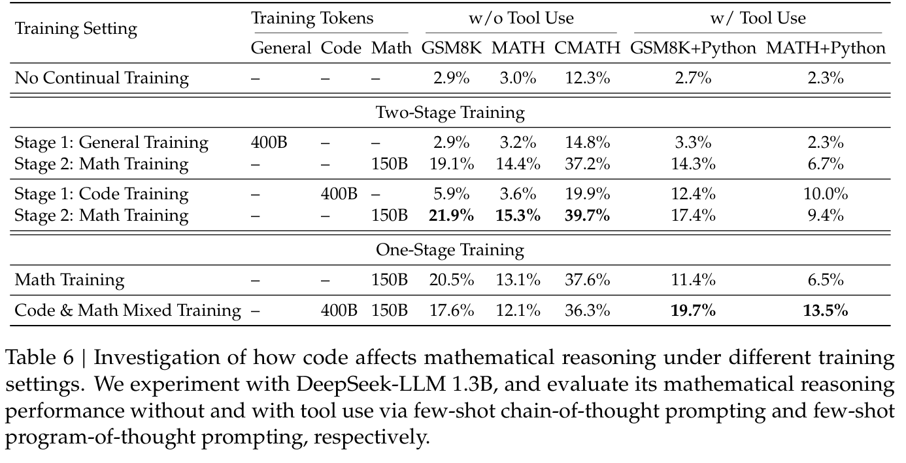
（接原文第 15 页。）
能够提高模型在使用工具和不使用工具两种情况下进行数学推理的能力。
为了研究代码训练如何影响数学推理，我们对以下两阶段和单阶段训练设置进行了实验：
结果。表 6 和表 7 展示了不同训练设置下的下游表现。
在两阶段和单阶段训练设置下，代码训练都有益于程序辅助数学推理。如表 6 所示，在两阶段训练设置下，仅代码训练就已显著提高使用 Python 解决 GSM8K 和 MATH 问题的能力。第二阶段的数学训练带来进一步提升。有趣的是，在单阶段训练设置下，混合代码 token 和数学 token 可以有效缓解两阶段训练引起的灾难性遗忘问题，并使编程（表 7）和程序辅助数学推理（表 6）产生协同收益。
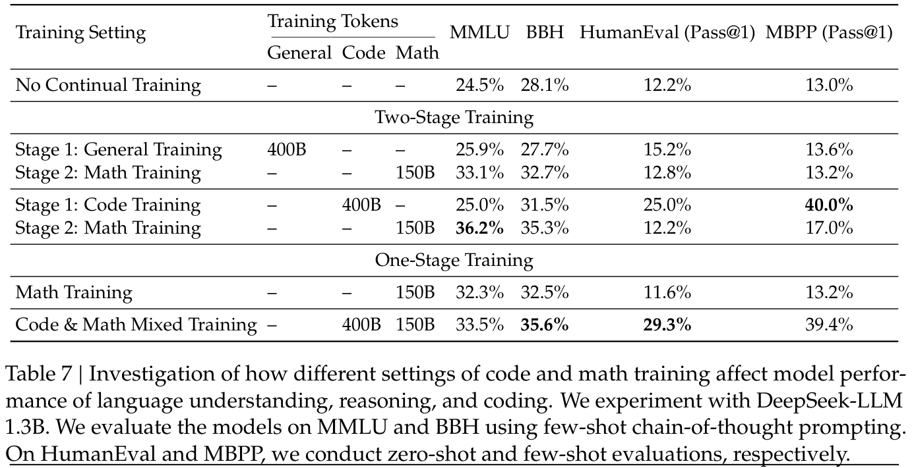
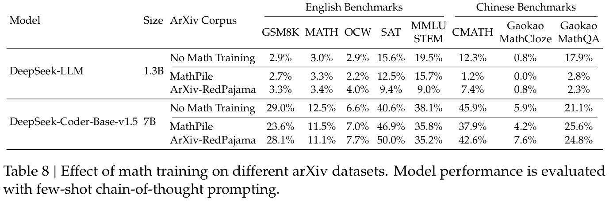
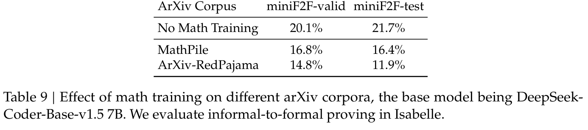
代码训练也能改善不使用工具时的数学推理。在两阶段训练设置下，初始代码训练阶段就已带来一定提升。它还提高了后续数学训练的效率，最终获得最佳表现。然而，将代码 token 和数学 token 混合用于单阶段训练，会损害不使用工具时的数学推理能力。一种猜测是，DeepSeek-LLM 1.3B 规模有限，没有足够的容量同时充分吸收代码和数学数据。
arXiv 论文通常被纳入数学预训练数据（Azerbayev et al., 2023; Lewkowycz et al., 2022a; Polu and Sutskever, 2020; Wang et al., 2023c）。然而，
（本段接原文第 18 页。）
（接原文第 17 页。）
关于它们对数学推理影响的细致分析尚未广泛开展。我们的实验得到了一个可能违背直觉的结果：arXiv 论文似乎无法有效改善数学推理。我们使用经过不同处理流水线的 arXiv 语料库，对不同规模的模型开展实验，包括 DeepSeek-LLM 1.3B 和 DeepSeek-Coder-Base-v1.5 7B（Guo et al., 2024）：
实验中，我们在每个 arXiv 语料库上，分别以 150B 个 token 训练 DeepSeek-LLM 1.3B，以 40B 个 token 训练 DeepSeek-Coder-Base-v1.5 7B。arXiv 论文似乎无法有效改善数学推理。当仅在 arXiv 语料库上训练时，这两个模型在本研究所用的不同复杂程度数学基准上，都没有显著改善，甚至出现退化。这些基准包括 GSM8K 和 MATH 等定量推理数据集（表 8）、MMLU-STEM 等选择题挑战（表 8），以及 miniF2F 等形式化数学任务（表 9）。
然而，这一结论存在局限，应谨慎看待。我们尚未研究：
因此，还需要进一步探索，我们将其留待未来研究。
本节提供一个统一范式，以分析 SFT、RFT、DPO、PPO、GRPO 等不同训练方法，并进一步通过实验探索统一范式中的各个因素。一般而言，一种训练方法相对于参数 \(\theta\) 的 gradient 可以写为：
其中存在三个关键组成部分：（1）数据来源 \(D\)，决定训练数据；（2）奖励函数 \(\pi _{rf}\)，是训练奖励信号的来源；（3）算法 \(A\)，将训练数据与奖励信号处理为 gradient 系数 GC，从而决定对数据进行惩罚或强化的幅度。我们依据这一统一范式分析若干代表性方法：
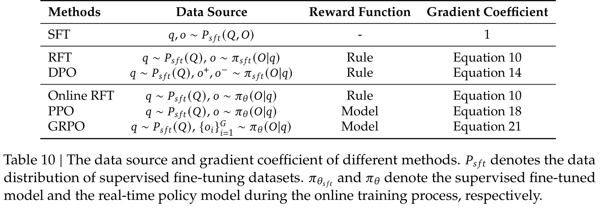
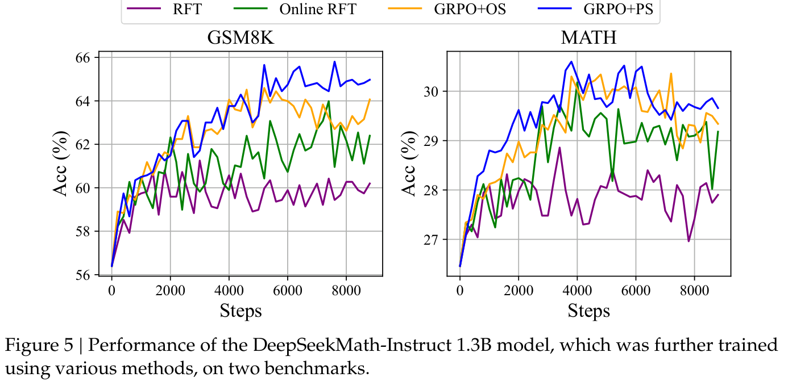
我们在表 10 中总结了这些方法的组成部分。更详细的推导过程请参见附录 A.1。
关于数据来源的观察。我们将数据来源分为两类：在线采样与离线采样。在线采样指训练数据来自实时训练中的策略模型的探索结果，而离线采样指
（本段接原文第 20 页。）
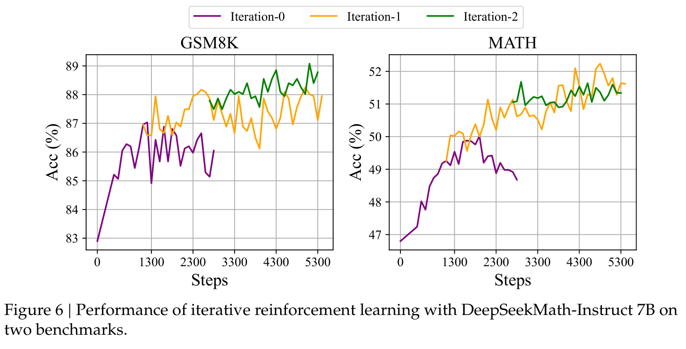
（接原文第 19 页。）
训练数据来自初始 SFT 模型的采样结果。RFT 和 DPO 采用离线方式，而 Online RFT 和 GRPO 采用在线方式。
如图 5 所示，我们发现 Online RFT 在两个基准上显著超过 RFT。具体而言，Online RFT 在训练早期与 RFT 的表现相当，但在后期取得压倒性优势，体现了在线训练的优越性。这很直观，因为在初始阶段，actor 与 SFT 模型非常相似，采样数据仅有较小差异。然而，在后期，actor 采样的数据将出现更显著差异，实时数据采样便带来更大优势。
关于 gradient 系数的观察。算法将奖励信号处理为 gradient 系数，用来更新模型参数。实验中，我们将奖励函数分为“Rule”和“Model”。Rule 指根据答案的正确性判断回答质量，Model 指训练一个 RM 为每个回答评分。RM 的训练数据基于规则判断。公式（10）和（21）突出显示了 GRPO 与 Online RFT 的一个关键差异：GRPO 会依据 RM 提供的奖励值调整 gradient 系数。这使其能够按照不同幅度，对回答进行不同程度的强化和惩罚。相比之下，Online RFT 不具备这一特点；它不惩罚错误回答，并以相同强度统一强化所有答案正确的回答。
如图 5 所示，GRPO 超过 Online RFT，凸显了调整正负 gradient 系数的有效性。此外，GRPO+PS 比 GRPO+OS 表现更好，表明使用细粒度、感知推理步骤的 gradient 系数具有益处。我们还探索迭代强化学习，在实验中进行了两轮迭代。如图 6 所示，我们发现迭代强化学习显著改善性能，尤其是第一次迭代。
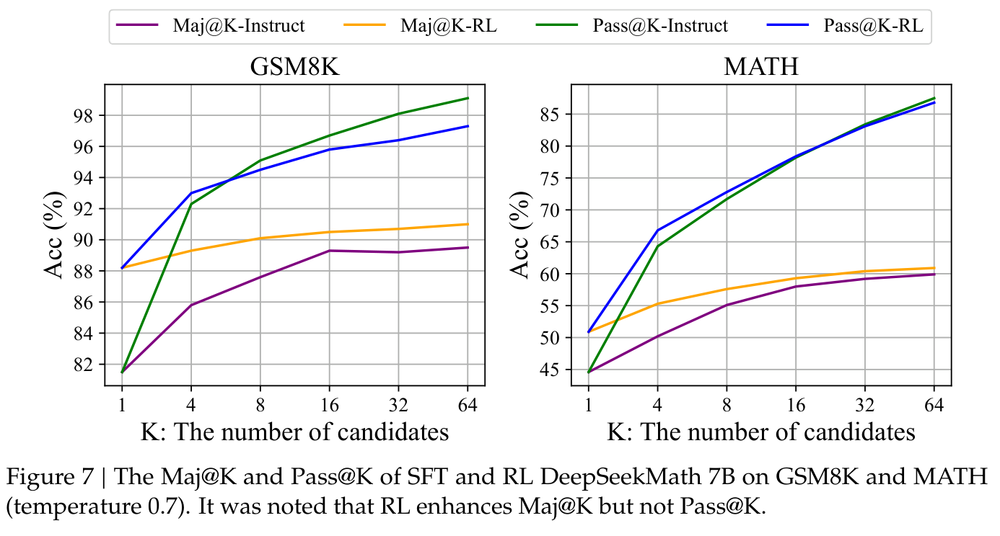
本文基于指令微调数据的一个子集进行强化学习，并在指令微调模型之上取得了显著性能提升。为进一步解释强化学习为何有效，我们在两个基准上评估 Instruct 和 RL 模型的 Pass@K 与 Maj@K 准确率。如图 7 所示，强化学习提升了 Maj@K 的表现，但没有提升 Pass@K。这些发现表明，强化学习通过使输出分布更加稳健来提升模型整体性能；换言之，性能提升似乎来自提高 TopK 中正确回答的概率，而非增强基础能力。类似地，Wang et al.（2023a）发现了 SFT 模型在推理任务中的错位问题，并指出可以通过一系列偏好对齐策略改善 SFT 模型的推理表现（Song et al., 2023; Wang et al., 2023a; Yuan et al., 2023b）。
我们展示了强化学习在数学推理任务中表现很好。我们还提供了一个统一范式，用来理解不同的代表性训练方法。在这一范式中，所有方法都可以被理解为直接或简化的强化学习技术。如公式（5）所总结的，存在三个关键组成部分：数据来源、算法和奖励函数。我们针对这三个组成部分提出一些潜在的未来方向。
数据来源。数据来源是所有训练方法的原材料。在强化学习语境中，我们具体将数据来源定义为未标注的问题，以及从策略模型采样得到的输出。本文只使用指令微调阶段的问题，并采用朴素的 nucleus sampling 对输出进行采样。我们认为，这可能是我们的强化学习流水线仅提升 Maj@K 表现的原因。未来，我们将针对分布外的问题提示探索我们的强化学习流水线，并结合先进的采样（decoding）策略，例如基于树搜索的方法（Yao et al., 2023）。此外，高效推理技术（Kwon et al., 2023; Leviathan et al., 2023; Xia et al., 2023, 2024）决定了
（本段接原文第 22 页。）
（接原文第 21 页。）
策略模型的探索效率，同样发挥着极其重要的作用。
算法。算法将数据与奖励信号处理为 gradient 系数，以更新模型参数。依据公式（5），从某种程度上说，目前所有方法都完全信任奖励函数的信号，并据此提高或降低某个 token 的条件概率。然而，不可能保证奖励信号始终可靠，尤其在极其复杂的任务中。例如，即使是由受过充分训练的标注人员精心标注的 PRM800K 数据集（Lightman et al., 2023），仍有约 20% 的错误标注7。为此，我们将探索对噪声奖励信号具有鲁棒性的强化学习算法。我们相信，这类弱到强（WEAK-TO-STRONG）（Burns et al., 2023）对齐方法将给学习算法带来根本性变化。
奖励函数。奖励函数是训练信号的来源。在强化学习中，奖励函数通常是神经网络 RM。我们认为 RM 存在三个重要方向：（1）如何增强 RM 的泛化能力。RM 必须有效泛化，以处理分布外问题和先进 decoding 策略产生的输出；否则，强化学习可能只是稳定 LLM 的分布，而非提升其基础能力。（2）如何反映 RM 的不确定性。不确定性有可能成为连接较弱 RM 与弱到强学习算法的桥梁。（3）如何高效构建高质量 PRM，为推理过程提供细粒度训练信号（Lightman et al., 2023; Wang et al., 2023b）。
我们提出 DeepSeekMath，它在竞赛级 MATH 基准上超过所有开源模型，并接近闭源模型的表现。DeepSeekMath 由 DeepSeek-Coder-v1.5 7B 初始化，进行 500B 个 token 的持续训练，其中一个重要的数据组成部分是来自 Common Crawl 的 120B 个数学 token。大量消融研究表明，网页对于提供高质量数学数据具有巨大潜力，而 arXiv 的益处可能不及预期。我们提出 Group Relative Policy Optimization（GRPO），这是 Proximal Policy Optimization（PPO）的一种变体，可以用更少的内存消耗显著改善数学推理能力。实验结果表明，即使 DeepSeekMath-Instruct 7B 已在基准上取得很高分数，GRPO 仍然有效。我们还提供了一个统一范式来理解一系列方法，并总结了实现更有效强化学习的若干潜在方向。
尽管 DeepSeekMath 在定量推理基准上取得了出色成绩，但其几何和定理证明能力相较闭源模型仍然较弱。例如，在我们的试运行中，该模型无法处理与三角形和椭圆相关的问题，这可能表明预训练和微调中的数据筛选存在偏差。此外，受模型规模限制，DeepSeekMath 的少样本能力弱于 GPT-4。GPT-4 可以通过少样本输入提高表现，而 DeepSeekMath 在零样本和少样本评估中的表现相近。未来，我们将进一步改进精心设计的数据筛选流水线，以构建更多高质量预训练语料。此外，我们将探索第 5.2.3 节中的潜在方向，以实现更有效的 LLM 强化学习。
7 https://github.com/openai/prm800k/issues/12#issuecomment-1728491852
R. Anil, S. Borgeaud, Y. Wu, J. Alayrac, J. Yu, R. Soricut, J. Schalkwyk, A. M. Dai, A. Hauth, K. Millican, D. Silver, S. Petrov, M. Johnson, I. Antonoglou, J. Schrittwieser, A. Glaese, J. Chen, E. Pitler, T. P. Lillicrap, A. Lazaridou, O. Firat, J. Molloy, M. Isard, P. R. Barham, T. Hennigan, B. Lee, F. Viola, M. Reynolds, Y. Xu, R. Doherty, E. Collins, C. Meyer, E. Rutherford, E. Moreira, K. Ayoub, M. Goel, G. Tucker, E. Piqueras, M. Krikun, I. Barr, N. Savinov, I. Danihelka, B. Roelofs, A. White, A. Andreassen, T. von Glehn, L. Yagati, M. Kazemi, L. Gonzalez, M. Khalman, J. Sygnowski, and et al. Gemini: A family of highly capable multimodal models. CoRR, abs/2312.11805, 2023. doi: 10.48550/ARXIV.2312.11805. URL https://doi.org/10.48550/arXiv.2312.11805.
中文标题：Gemini：高能力多模态模型家族
J. Austin, A. Odena, M. Nye, M. Bosma, H. Michalewski, D. Dohan, E. Jiang, C. Cai, M. Terry, Q. Le, et al. Program synthesis with large language models. arXiv preprint arXiv:2108.07732, 2021.
中文标题：使用 LLM 进行程序合成
Z. Azerbayev, H. Schoelkopf, K. Paster, M. D. Santos, S. McAleer, A. Q. Jiang, J. Deng, S. Biderman, and S. Welleck. Llemma: An open language model for mathematics. arXiv preprint arXiv:2310.10631, 2023.
中文标题：Llemma：面向数学的开放语言模型
J. Bai, S. Bai, Y. Chu, Z. Cui, K. Dang, X. Deng, Y. Fan, W. Ge, Y. Han, F. Huang, et al. Qwen technical report. arXiv preprint arXiv:2309.16609, 2023.
中文标题：Qwen 技术报告
C. Burns, P. Izmailov, J. H. Kirchner, B. Baker, L. Gao, L. Aschenbrenner, Y. Chen, A. Ecoffet, M. Joglekar, J. Leike, et al. Weak-to-strong generalization: Eliciting strong capabilities with weak supervision. arXiv preprint arXiv:2312.09390, 2023.
中文标题：弱到强泛化：通过弱监督激发强能力
ChatGLM3 Team. Chatglm3 series: Open bilingual chat llms, 2023. URL https://github.com/THUDM/ChatGLM3.
中文标题：ChatGLM3 系列：开放的双语对话 LLM
M. Chen, J. Tworek, H. Jun, Q. Yuan, H. P. de Oliveira Pinto, J. Kaplan, H. Edwards, Y. Burda, N. Joseph, G. Brockman, A. Ray, R. Puri, G. Krueger, M. Petrov, H. Khlaaf, G. Sastry, P. Mishkin, B. Chan, S. Gray, N. Ryder, M. Pavlov, A. Power, L. Kaiser, M. Bavarian, C. Winter, P. Tillet, F. P. Such, D. Cummings, M. Plappert, F. Chantzis, E. Barnes, A. Herbert-Voss, W. H. Guss, A. Nichol, A. Paino, N. Tezak, J. Tang, I. Babuschkin, S. Balaji, S. Jain, W. Saunders, C. Hesse, A. N. Carr, J. Leike, J. Achiam, V. Misra, E. Morikawa, A. Radford, M. Knight, M. Brundage, M. Murati, K. Mayer, P. Welinder, B. McGrew, D. Amodei, S. McCandlish, I. Sutskever, and W. Zaremba. Evaluating large language models trained on code. CoRR, abs/2107.03374, 2021. URL https://arxiv.org/abs/2107.03374.
中文标题：评估在代码上训练的 LLM
W. Chen, X. Ma, X. Wang, and W. W. Cohen. Program of thoughts prompting: Disentangling computation from reasoning for numerical reasoning tasks. CoRR, abs/2211.12588, 2022. doi: 10.48550/ARXIV.2211.12588. URL https://doi.org/10.48550/arXiv.2211.12588.
中文标题：PoT 提示：为数值推理任务解耦计算与推理
K. Cobbe, V. Kosaraju, M. Bavarian, M. Chen, H. Jun, L. Kaiser, M. Plappert, J. Tworek, J. Hilton, R. Nakano, et al. Training verifiers to solve math word problems. arXiv preprint arXiv:2110.14168, 2021.
中文标题：训练验证器以解决数学应用题
T. Computer. Redpajama: an open dataset for training large language models, Oct. 2023. URL https://github.com/togethercomputer/RedPajama-Data.
中文标题：RedPajama：用于训练 LLM 的开放数据集
DeepSeek-AI. Deepseek LLM: scaling open-source language models with longtermism. CoRR, abs/2401.02954, 2024. doi: 10.48550/ARXIV.2401.02954. URL https://doi.org/10.48550/arXiv.2401.02954.
中文标题：DeepSeek LLM：以长期主义扩展开源语言模型
Z. Du, Y. Qian, X. Liu, M. Ding, J. Qiu, Z. Yang, and J. Tang. Glm: General language model pretraining with autoregressive blank infilling. In Proceedings of the 60th Annual Meeting of the Association for Computational Linguistics (Volume 1: Long Papers), pages 320–335, 2022.
中文标题：GLM：通过自回归空白填充进行通用语言模型预训练
L. Gao, A. Madaan, S. Zhou, U. Alon, P. Liu, Y. Yang, J. Callan, and G. Neubig. PAL: program-aided language models. In A. Krause, E. Brunskill, K. Cho, B. Engelhardt, S. Sabato, and J. Scarlett, editors, International Conference on Machine Learning, ICML 2023, 23-29 July 2023, Honolulu, Hawaii, USA, volume 202 of Proceedings of Machine Learning Research, pages 10764–10799. PMLR, 2023. URL https://proceedings.mlr.press/v202/gao23f.html.
中文标题：PAL：程序辅助语言模型
Z. Gou, Z. Shao, Y. Gong, Y. Shen, Y. Yang, M. Huang, N. Duan, and W. Chen. Tora: A tool-integrated reasoning agent for mathematical problem solving. CoRR, abs/2309.17452, 2023. doi: 10.48550/ARXIV.2309.17452. URL https://doi.org/10.48550/arXiv.2309.17452.
中文标题：ToRA：用于数学问题求解的tool-integrated reasoningagent
D. Guo, Q. Zhu, D. Yang, Z. Xie, K. Dong, W. Zhang, G. Chen, X. Bi, Y. Wu, Y. K. Li, F. Luo, Y. Xiong, and W. Liang. Deepseek-coder: When the large language model meets programming – the rise of code intelligence, 2024.
中文标题：DeepSeek-Coder：当 LLM 遇到编程——代码智能的崛起
D. Hendrycks, C. Burns, S. Basart, A. Zou, M. Mazeika, D. Song, and J. Steinhardt. Measuring massive multitask language understanding. arXiv preprint arXiv:2009.03300, 2020.
中文标题：衡量大规模多任务语言理解
D. Hendrycks, C. Burns, S. Kadavath, A. Arora, S. Basart, E. Tang, D. Song, and J. Steinhardt. Measuring mathematical problem solving with the math dataset. arXiv preprint arXiv:2103.03874, 2021.
中文标题：使用 MATH 数据集衡量数学问题求解能力
High-flyer. Hai-llm: 高效且轻量的大模型训练工具, 2023. URL https://www.high-flyer.cn/en/blog/hai-llm.
中文标题：HAI-LLM：高效且轻量的大模型训练工具
Inflection AI. Inflection-2, 2023. URL https://inflection.ai/inflection-2.
中文标题：Inflection-2
A. Q. Jiang, S. Welleck, J. P. Zhou, W. Li, J. Liu, M. Jamnik, T. Lacroix, Y. Wu, and G. Lample. Draft, sketch, and prove: Guiding formal theorem provers with informal proofs. arXiv preprint arXiv:2210.12283, 2022.
中文标题：草稿、草图与证明：用非形式化证明引导形式化定理证明器
A. Q. Jiang, A. Sablayrolles, A. Mensch, C. Bamford, D. S. Chaplot, D. d. l. Casas, F. Bressand, G. Lengyel, G. Lample, L. Saulnier, et al. Mistral 7b. arXiv preprint arXiv:2310.06825, 2023.
中文标题：Mistral 7B
A. Joulin, E. Grave, P. Bojanowski, M. Douze, H. Jégou, and T. Mikolov. Fasttext. zip: Compressing text classification models. arXiv preprint arXiv:1612.03651, 2016.
中文标题：fastText.zip：压缩文本分类模型
W. Kwon, Z. Li, S. Zhuang, Y. Sheng, L. Zheng, C. H. Yu, J. E. Gonzalez, H. Zhang, and I. Stoica. Efficient memory management for large language model serving with pagedattention. In Proceedings of the ACM SIGOPS 29th Symposium on Operating Systems Principles, 2023.
中文标题：通过 PagedAttention 高效管理 LLM 服务的内存
Y. Leviathan, M. Kalman, and Y. Matias. Fast inference from transformers via speculative decoding. In International Conference on Machine Learning, pages 19274–19286. PMLR, 2023.
中文标题：通过 speculative decoding 实现 Transformer 快速推理
A. Lewkowycz, A. Andreassen, D. Dohan, E. Dyer, H. Michalewski, V. Ramasesh, A. Slone, C. Anil, I. Schlag, T. Gutman-Solo, et al. Solving quantitative reasoning problems with language models. Advances in Neural Information Processing Systems, 35:3843–3857, 2022a.
中文标题：使用语言模型解决定量推理问题
A. Lewkowycz, A. Andreassen, D. Dohan, E. Dyer, H. Michalewski, V. V. Ramasesh, A. Slone, C. Anil, I. Schlag, T. Gutman-Solo, Y. Wu, B. Neyshabur, G. Gur-Ari, and V. Misra. Solving quantitative reasoning problems with language models. In S. Koyejo, S. Mohamed, A. Agarwal, D. Belgrave, K. Cho, and A. Oh, editors, Advances in Neural Information Processing Systems 35: Annual Conference on Neural Information Processing Systems 2022, NeurIPS 2022, New Orleans, LA, USA, November 28 - December 9, 2022, 2022b. URL http://papers.nips.cc/paper_files/paper/2022/hash/18abbeef8cfe9203fdf9053c9c4fe191-Abstract-Conference.html.
中文标题：使用语言模型解决定量推理问题
H. Lightman, V. Kosaraju, Y. Burda, H. Edwards, B. Baker, T. Lee, J. Leike, J. Schulman, I. Sutskever, and K. Cobbe. Let’s verify step by step. arXiv preprint arXiv:2305.20050, 2023.
中文标题：让我们逐步验证
I. Loshchilov and F. Hutter. Decoupled weight decay regularization. arXiv preprint arXiv:1711.05101, 2017.
中文标题：解耦权重衰减正则化
H. Luo, Q. Sun, C. Xu, P. Zhao, J. Lou, C. Tao, X. Geng, Q. Lin, S. Chen, and D. Zhang. Wizardmath: Empowering mathematical reasoning for large language models via reinforced evol-instruct. arXiv preprint arXiv:2308.09583, 2023.
中文标题：WizardMath：通过强化的 Evol-Instruct 赋予 LLM 数学推理能力
S. Mishra, M. Finlayson, P. Lu, L. Tang, S. Welleck, C. Baral, T. Rajpurohit, O. Tafjord, A. Sabharwal, P. Clark, and A. Kalyan. LILA: A unified benchmark for mathematical reasoning. In Y. Goldberg, Z. Kozareva, and Y. Zhang, editors, Proceedings of the 2022 Conference on Empirical Methods in Natural Language Processing, EMNLP 2022, Abu Dhabi, United Arab Emirates, December 7-11, 2022, pages 5807–5832. Association for Computational Linguistics, 2022. doi: 10.18653/V1/2022.EMNLP-MAIN.392. URL https://doi.org/10.18653/v1/2022.emnlp-main.392.
中文标题：LILA：统一的数学推理基准
X. Nguyen, W. Zhang, X. Li, M. M. Aljunied, Q. Tan, L. Cheng, G. Chen, Y. Deng, S. Yang, C. Liu, H. Zhang, and L. Bing. Seallms - large language models for southeast asia. CoRR, abs/2312.00738, 2023. doi: 10.48550/ARXIV.2312.00738. URL https://doi.org/10.48550/arXiv.2312.00738.
中文标题：SeaLLMs：面向东南亚的 LLM
OpenAI. GPT4 technical report. arXiv preprint arXiv:2303.08774, 2023.
中文标题：GPT-4 技术报告
L. Ouyang, J. Wu, X. Jiang, D. Almeida, C. Wainwright, P. Mishkin, C. Zhang, S. Agarwal, K. Slama, A. Ray, et al. Training language models to follow instructions with human feedback. Advances in Neural Information Processing Systems, 35:27730–27744, 2022.
中文标题：利用人类反馈训练语言模型遵循指令
K. Paster, M. D. Santos, Z. Azerbayev, and J. Ba. Openwebmath: An open dataset of high-quality mathematical web text. CoRR, abs/2310.06786, 2023. doi: 10.48550/ARXIV.2310.06786. URL https://doi.org/10.48550/arXiv.2310.06786.
中文标题：OpenWebMath：高质量数学网页文本的开放数据集
L. C. Paulson. Three years of experience with sledgehammer, a practical link between automatic and interactive theorem provers. In R. A. Schmidt, S. Schulz, and B. Konev, editors, Proceedings of the 2nd Workshop on Practical Aspects of Automated Reasoning, PAAR-2010, Edinburgh, Scotland, UK, July 14, 2010, volume 9 of EPiC Series in Computing, pages 1–10. EasyChair, 2010. doi: 10.29007/TNFD. URL https://doi.org/10.29007/tnfd.
中文标题：使用 Sledgehammer 的三年经验：自动与交互式定理证明器之间的实用连接
S. Polu and I. Sutskever. Generative language modeling for automated theorem proving. CoRR, abs/2009.03393, 2020. URL https://arxiv.org/abs/2009.03393.
中文标题：用于自动定理证明的生成式语言建模
R. Rafailov, A. Sharma, E. Mitchell, S. Ermon, C. D. Manning, and C. Finn. Direct preference optimization: Your language model is secretly a reward model. 2023.
中文标题：DPO：你的语言模型其实就是 RM
J. Schulman. Approximating kl divergence, 2020. URL http://joschu.net/blog/kl-approx.html.
中文标题：近似 KL 散度
J. Schulman, P. Moritz, S. Levine, M. Jordan, and P. Abbeel. High-dimensional continuous control using generalized advantage estimation. arXiv preprint arXiv:1506.02438, 2015.
中文标题：使用广义优势估计进行高维连续控制
J. Schulman, F. Wolski, P. Dhariwal, A. Radford, and O. Klimov. Proximal policy optimization algorithms. arXiv preprint arXiv:1707.06347, 2017.
中文标题：PPO 算法
F. Shi, M. Suzgun, M. Freitag, X. Wang, S. Srivats, S. Vosoughi, H. W. Chung, Y. Tay, S. Ruder, D. Zhou, D. Das, and J. Wei. Language models are multilingual chain-of-thought reasoners. In The Eleventh International Conference on Learning Representations, ICLR 2023, Kigali, Rwanda, May 1-5, 2023. OpenReview.net, 2023. URL https://openreview.net/pdf?id=fR3wGCk-IXp.
中文标题：语言模型是多语言 CoT 推理器
F. Song, B. Yu, M. Li, H. Yu, F. Huang, Y. Li, and H. Wang. Preference ranking optimization for human alignment. arXiv preprint arXiv:2306.17492, 2023.
中文标题：用于人类对齐的偏好排序优化
M. Suzgun, N. Scales, N. Schärli, S. Gehrmann, Y. Tay, H. W. Chung, A. Chowdhery, Q. V. Le, E. H. Chi, D. Zhou, et al. Challenging big-bench tasks and whether chain-of-thought can solve them. arXiv preprint arXiv:2210.09261, 2022.
中文标题：具有挑战性的 BIG-Bench 任务及 CoT 能否解决它们
T. Tao. Embracing change and resetting expectations, 2023. URL https://unlocked.microsoft.com/ai-anthology/terence-tao/.
中文标题：拥抱变化并重设预期
H. Touvron, L. Martin, K. Stone, P. Albert, A. Almahairi, Y. Babaei, N. Bashlykov, S. Batra, P. Bhargava, S. Bhosale, D. Bikel, L. Blecher, C. Canton-Ferrer, M. Chen, G. Cucurull, D. Esiobu, J. Fernandes, J. Fu, W. Fu, B. Fuller, C. Gao, V. Goswami, N. Goyal, A. Hartshorn, S. Hosseini, R. Hou, H. Inan, M. Kardas, V. Kerkez, M. Khabsa, I. Kloumann, A. Korenev, P. S. Koura, M. Lachaux, T. Lavril, J. Lee, D. Liskovich, Y. Lu, Y. Mao, X. Martinet, T. Mihaylov, P. Mishra, I. Molybog, Y. Nie, A. Poulton, J. Reizenstein, R. Rungta, K. Saladi, A. Schelten, R. Silva, E. M. Smith, R. Subramanian, X. E. Tan, B. Tang, R. Taylor, A. Williams, J. X. Kuan, P. Xu, Z. Yan, I. Zarov, Y. Zhang, A. Fan, M. Kambadur, S. Narang, A. Rodriguez, R. Stojnic, S. Edunov, and T. Scialom. Llama 2: Open foundation and fine-tuned chat models. CoRR, abs/2307.09288, 2023. doi: 10.48550/arXiv.2307.09288. URL https://doi.org/10.48550/arXiv.2307.09288.
中文标题：Llama 2：开放的基础模型与经过微调的对话模型
T. H. Trinh, Y. Wu, Q. V. Le, H. He, and T. Luong. Solving olympiad geometry without human demonstrations. Nature, 625(7995):476–482, 2024.
中文标题：无需人类示范解决奥林匹克几何问题
P. Wang, L. Li, L. Chen, F. Song, B. Lin, Y. Cao, T. Liu, and Z. Sui. Making large language models better reasoners with alignment. arXiv preprint arXiv:2309.02144, 2023a.
中文标题：通过对齐使 LLM 成为更好的推理器
P. Wang, L. Li, Z. Shao, R. Xu, D. Dai, Y. Li, D. Chen, Y. Wu, and Z. Sui. Math-shepherd: Verify and reinforce llms step-by-step without human annotations. CoRR, abs/2312.08935, 2023b.
中文标题：Math-Shepherd：无需人工标注，逐步验证和强化 LLM
Z. Wang, R. Xia, and P. Liu. Generative AI for math: Part I - mathpile: A billion-token-scale pretraining corpus for math. CoRR, abs/2312.17120, 2023c. doi: 10.48550/ARXIV.2312.17120. URL https://doi.org/10.48550/arXiv.2312.17120.
中文标题：面向数学的生成式 AI：第一部分——MathPile，十亿 token 规模的数学预训练语料库
J. Wei, X. Wang, D. Schuurmans, M. Bosma, B. Ichter, F. Xia, E. H. Chi, Q. V. Le, and D. Zhou. Chain-of-thought prompting elicits reasoning in large language models. In NeurIPS, 2022. URL http://papers.nips.cc/paper_files/paper/2022/hash/9d5609613524ecf4f15af0f7b31abca4-Abstract-Conference.html.
中文标题：CoT 提示激发 LLM 中的推理能力
T. Wei, J. Luan, W. Liu, S. Dong, and B. Wang. Cmath: Can your language model pass chinese elementary school math test?, 2023.
中文标题：CMATH：你的语言模型能通过中国小学数学考试吗？
M. Wenzel, L. C. Paulson, and T. Nipkow. The isabelle framework. In O. A. Mohamed, C. A. Muñoz, and S. Tahar, editors, Theorem Proving in Higher Order Logics, 21st International Conference, TPHOLs 2008, Montreal, Canada, August 18-21, 2008. Proceedings, volume 5170 of Lecture Notes in Computer Science, pages 33–38. Springer, 2008. doi: 10.1007/978-3-540-7 1067-7\_7. URL https://doi.org/10.1007/978-3-540-71067-7_7.
中文标题：Isabelle 框架
H. Xia, T. Ge, P. Wang, S.-Q. Chen, F. Wei, and Z. Sui. Speculative decoding: Exploiting speculative execution for accelerating seq2seq generation. In H. Bouamor, J. Pino, and K. Bali, editors, Findings of the Association for Computational Linguistics: EMNLP 2023, pages 3909– 3925, Singapore, Dec. 2023. Association for Computational Linguistics. doi: 10.18653/v1/20 23.findings-emnlp.257. URL https://aclanthology.org/2023.findings-emnlp.257.
中文标题：speculative decoding：利用推测执行加速 seq2seq 生成
H. Xia, Z. Yang, Q. Dong, P. Wang, Y. Li, T. Ge, T. Liu, W. Li, and Z. Sui. Unlocking efficiency in large language model inference: A comprehensive survey of speculative decoding. arXiv preprint arXiv:2401.07851, 2024.
中文标题：释放 LLM 推理效率：speculative decoding 的全面综述
S. Yao, D. Yu, J. Zhao, I. Shafran, T. L. Griffiths, Y. Cao, and K. Narasimhan. Tree of thoughts: Deliberate problem solving with large language models. arXiv preprint arXiv:2305.10601, 2023.
中文标题：思维树：使用 LLM 审慎解决问题
L. Yu, W. Jiang, H. Shi, J. Yu, Z. Liu, Y. Zhang, J. T. Kwok, Z. Li, A. Weller, and W. Liu. Metamath: Bootstrap your own mathematical questions for large language models. CoRR, abs/2309.12284, 2023. doi: 10.48550/ARXIV.2309.12284. URL https://doi.org/10.48550/arXiv.2309.12284.
中文标题：MetaMath：为 LLM 自举构建数学问题
Z. Yuan, H. Yuan, C. Li, G. Dong, C. Tan, and C. Zhou. Scaling relationship on learning mathematical reasoning with large language models. arXiv preprint arXiv:2308.01825, 2023a.
中文标题：LLM 学习数学推理的缩放关系
Z. Yuan, H. Yuan, C. Tan, W. Wang, S. Huang, and F. Huang. Rrhf: Rank responses to align language models with human feedback without tears. arXiv preprint arXiv:2304.05302, 2023b.
中文标题：RRHF：通过回答排序轻松实现语言模型与人类反馈的对齐
X. Yue, X. Qu, G. Zhang, Y. Fu, W. Huang, H. Sun, Y. Su, and W. Chen. Mammoth: Building math generalist models through hybrid instruction tuning. CoRR, abs/2309.05653, 2023. doi: 10.48550/ARXIV.2309.05653. URL https://doi.org/10.48550/arXiv.2309.05653.
中文标题：MAmmoTH：通过混合指令微调构建数学通用模型
K. Zheng, J. M. Han, and S. Polu. Minif2f: a cross-system benchmark for formal olympiad-level mathematics. arXiv preprint arXiv:2109.00110, 2021.
中文标题：miniF2F：形式化奥林匹克竞赛级数学的跨系统基准
W. Zhong, R. Cui, Y. Guo, Y. Liang, S. Lu, Y. Wang, A. Saied, W. Chen, and N. Duan. AGIEval: A human-centric benchmark for evaluating foundation models. CoRR, abs/2304.06364, 2023. doi: 10.48550/arXiv.2304.06364. URL https://doi.org/10.48550/arXiv.2304.06364.
中文标题：AGIEval：以人为中心的基础模型评估基准
我们给出各种方法的数据来源和 gradient 系数（算法与奖励函数）的详细推导，包括 SFT、RFT、Online RFT、DPO、PPO 和 GRPO。
SFT 的目标是最大化以下目标函数：
\(J_{SFT}(\theta )\) 的 gradient 为：
数据来源：用于 SFT 的数据集。奖励函数：可视为人工筛选。gradient 系数：始终设为 1。
拒绝采样微调首先针对每个问题，从经过 SFT 的 LLM 中采样多个输出，随后使用其中答案正确的采样输出训练 LLM。形式上，RFT 的目标是最大化以下目标函数：
\(J_{RFT}(\theta )\) 的 gradient 为：
数据来源：SFT 数据集中的问题，以及从 SFT 模型采样得到的输出。奖励函数：规则（答案是否正确）。gradient 系数：
公式（10）的分支含义：当 o 的答案正确时为 1；当 o 的答案错误时为 0。
RFT 与 Online RFT 的唯一区别是，Online RFT 的输出从实时策略模型 \(\pi _{\theta}\) 中采样，而不是从 SFT 模型 \(\pi _{\theta sft}\) 中采样。因此，Online RFT 的 gradient 为：
DPO 的目标为：
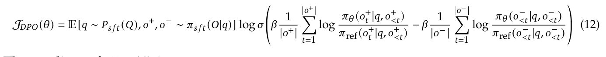
\(J_{DPO}(\theta )\) 的 gradient 为：
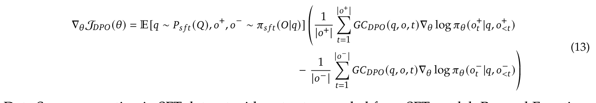
数据来源：SFT 数据集中的问题，以及从 SFT 模型采样得到的输出。奖励函数：通用领域中的人类偏好（数学任务中可以是“规则”）。gradient 系数：
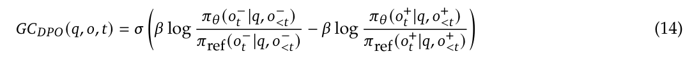
PPO 的目标为：
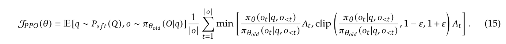
为简化分析，假设模型在每个探索阶段之后只更新一次，从而确保 \(\pi _{\theta old} = \pi _{\theta}\)。在这种情况下，可以移除 min 和 clip 操作：
\(J_{PPO}(\theta )\) 的 gradient 为：
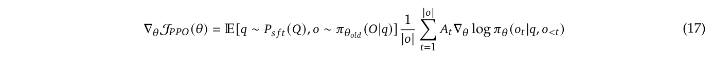
数据来源：SFT 数据集中的问题，以及从策略模型采样得到的输出。奖励函数：RM。gradient 系数：
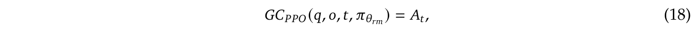
其中 \(A_{t}\) 是优势值，采用广义优势估计（GAE）（Schulman et al., 2015）计算，其依据是奖励 \(\{r_{\ge t}\}\) 和学习得到的价值函数 \(V_{\psi}\)。
GRPO 的目标为（假设 \(\pi _{\theta old} = \pi _{\theta}\)，以简化分析）：
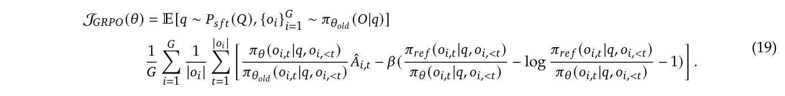
\(J_{GRPO}(\theta )\) 的 gradient 为：
数据来源：SFT 数据集中的问题，以及从策略模型采样得到的输出。奖励函数：RM。gradient 系数：
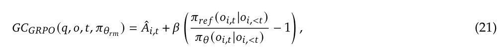
其中 \(\hat{A}_{i,t}\) 根据组内奖励分数计算。